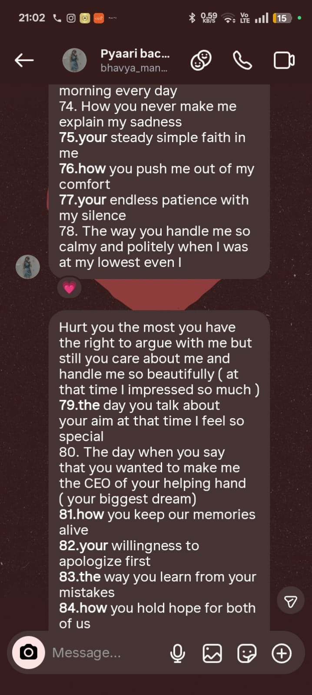
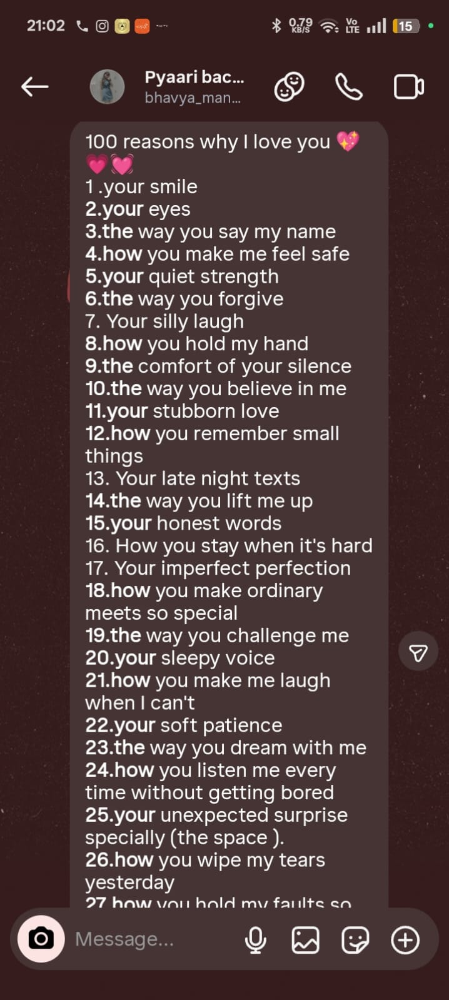
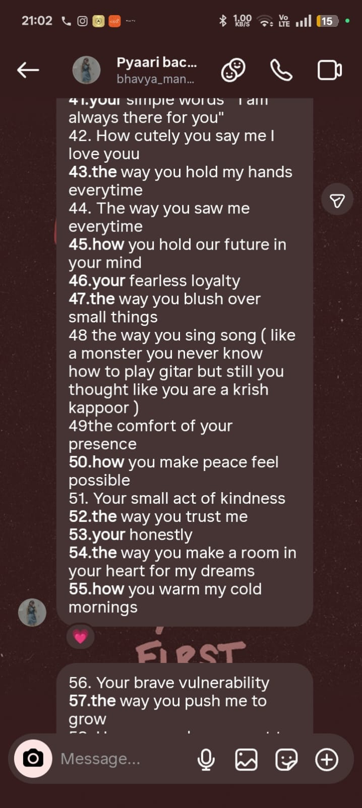
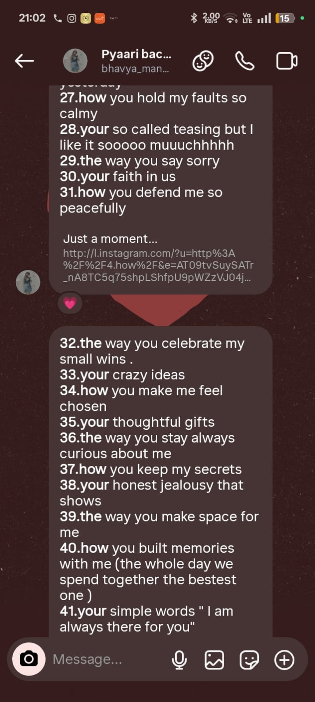
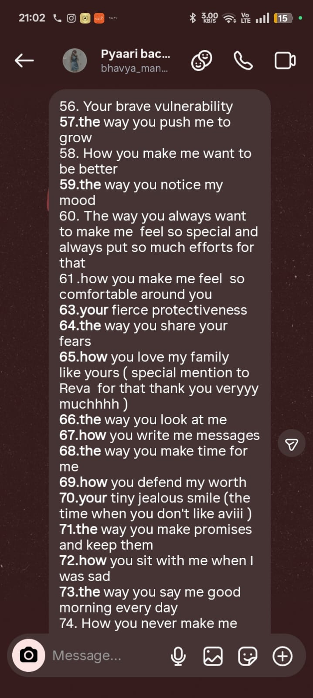
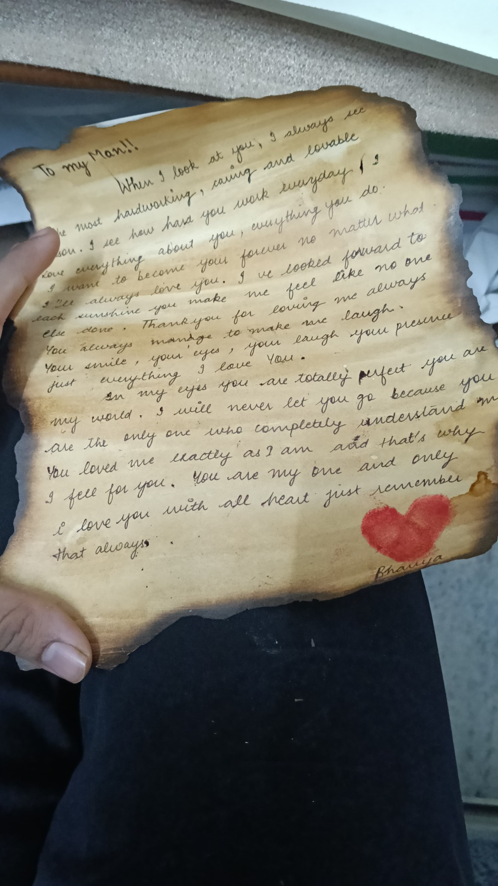
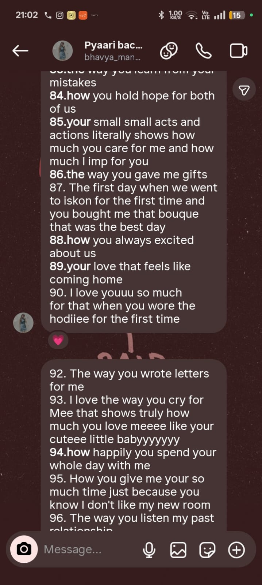
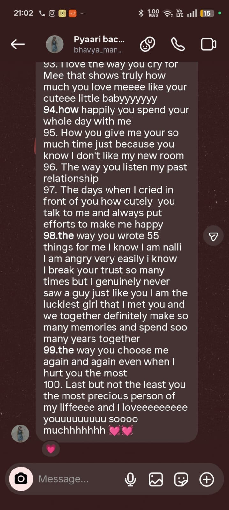
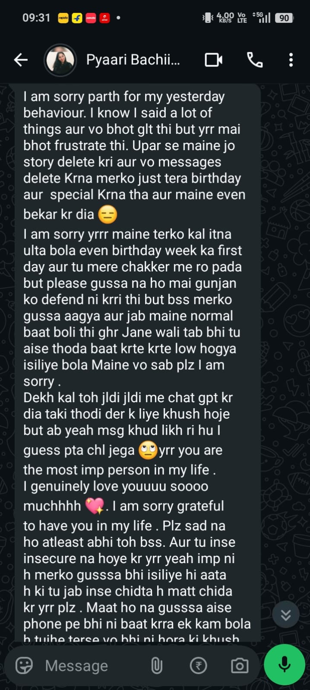

12 December 2025
The beginning
The day our story became ours.
Before you enter, tell me the three words that can open every locked door between us.
Hint: you already know them. ❤️
Nine months down. A whole lot more to come.
Nine memories. Not because there were only nine, but because some moments deserve a place where we can come back to them.

The day our story became ours.

The letters, the watch, the effort — you made me feel deeply loved.

One of those days I would rewind just to feel again.

A date that became a memory before we even realized it.

Another small piece of our story I never want to lose.

Your hand around my arm. Your sleepy voice. Your kid-like way of talking.

Not perfect. Just two people learning how to love each other better.

Just being together — the kind of memory that needs no grand occasion.

The first time we went to ISKON and the bouquet you brought me.
You wrote these. I kept the screenshots exactly as they are. Tap any one to read it properly.
The date that quietly became one of the most important dates in my life.
One of those days I would rewind just to feel it once more.
A date that became a memory before we even realized it.
Another little piece of our story that I never want to lose.
Today: nine months of choosing, learning, laughing, loving and growing.
I don't know exactly what life will look like. I know who I want beside me.
Play them with our song when you want to disappear into our little world.
This space is reserved for your fifth video. Add assets/video-05.mp4 when you have it.
To my pyaaro,
Happy 9 months, my love. ❤️
I don't even know where to begin because when I think about you, there isn't just one feeling that comes to my mind. It's love. It's gratitude. It's peace. It's excitement. And sometimes, honestly, it's the fear of losing you. But above everything, it's this feeling that somehow, in this huge world, I found someone who became so deeply important to me that I can't imagine my life without loving her.
Nine months.
It sounds like such a small number when I say it, but when I think about everything we've lived through in these nine months, it feels like we've lived so much more than just nine months.
You've changed so much for me, pyaaro. You changed so much because of me, and I don't think I'll ever be able to properly explain how much that means to me. You're genuinely one of the nicest people I've ever known. You're kind, you're peaceful, you're soft-hearted, and you're worth it.
You're worth it a thousand times.
And I hope you know that.
One memory that will always stay with me is my birthday.
Even when things between us weren't perfect, you still did so much for me. You wrote those long letters. You got me a watch. You prepared money and got it on your own. You put so much thought and effort into making me feel special. And honestly, that day made me feel like I was one of the most important people in your life.
I don't think I'll ever forget that feeling.
Because it wasn't really about the watch, the money, or the gifts. It was about you. It was about knowing that somewhere in your heart, you had thought about me, planned for me, worked for me, and wanted to make me happy.
That's something I'll carry with me for a very, very long time.
And then there are those days.
7th July.
4th January.
26th July.
I wish I could go back and live those days again—not because I want to change anything, but because those moments meant so much to me. If someone asked me which pieces of my life I'd want to hold onto forever, those memories would be some of the first ones I'd choose.
There are so many things about you that I love, but your kindness and your peaceful nature have always had a different place in my heart. You have this softness in you that I sometimes don't understand because I'm not always that way. I'm curious about everything. Physics, mathematics, random things, the world, how things work. Sometimes I can be rude. Sometimes I can be boring. Sometimes I can get too caught up in my own head.
But somehow, you became the one thing I never get bored of.
You.
I could talk about you, think about you, sit beside you, hold you, or simply watch you doing something completely normal—and somehow I'd still want more of you.
And one of the stupidest little things that melts me every single time is when you talk like a kid.
I don't know why.
It just makes me love you even more.
And I miss your hand.
I miss the way you hold my arm and wrap your hand around my bicep. It's such a small thing, probably something you don't even think twice about, but for me, it feels like one of those tiny moments where everything becomes quiet.
It's just you holding me.
And I love that.
Sometimes I imagine a future that isn't even something extravagant.
I imagine you standing in the kitchen, preparing something, and me coming behind you and hugging you.
That's home to me.
Not a house.
Not a city.
Not some perfect life.
You.
You standing there, me holding you from behind, and both of us knowing that we're exactly where we're supposed to be.
And pyaaro, there's something else I need to say.
I'm sorry.
I'm sorry for the times I said I was leaving. I'm sorry for saying I didn't want the relationship anymore. I'm sorry for making decisions in moments of anger or frustration that hurt the person I love. I'm sorry for involving your friend in something that belonged between us and making that conversation go on for 45 minutes when I should have handled things differently.
I know I've hurt you.
And knowing that hurts me too—not because I want you to forgive me just so I can feel better, but because you never deserved to be hurt by me in those ways.
I'm genuinely sorry.
I don't want to repeat those mistakes.
I don't want our relationship to become a place where either of us is constantly afraid of the next fight, the next argument, or the next thing that might break us.
I want to grow.
I want you to grow.
I want us to become better people because we were together, not smaller people because of each other.
And I promise you that I'll genuinely try to take care of you. I'll try to stand beside you. I'll try to take a stand for you wherever it matters. I'll try to become someone who makes you feel safe, loved, respected, and wanted.
I can't promise that I'll become perfect.
But I can promise that I'll keep trying.
Because you've taught me that love isn't just about the beautiful days.
It's also about choosing someone when things are difficult.
It's about learning.
It's about changing.
It's about realizing that sometimes loving someone means changing parts of yourself—not because they forced you to, but because you finally understand that the person you love deserves your best.
And I want to give you my best.
You call me monster.
And I think that's one of the cutest things about us.
Because you're my pyaaro—lovey-dovey, soft, sweet, the person who makes me feel loved.
And I'm your monster—the person chasing strength, dreams, passion, ambition, always wanting to become more.
But maybe that's exactly what makes us us.
You remind me to feel.
I remind myself to grow.
And somewhere between those two things, I want us to build something beautiful.
I want us to have a relationship where both of us have dreams and priorities and ambitions, but we never forget that we're a team.
I want us to grow together.
I want us to celebrate each other's wins.
I want us to hold each other through the losses.
I want us to choose each other even when life becomes difficult.
I want us to look at the world and say, “Whatever happens, we've got each other.”
Because that's what I want.
Not a perfect relationship.
A real one.
One where we fight, learn, laugh, grow, forgive, improve, love, and keep choosing each other.
And if I could sit beside you one year from now, I don't know what life would look like.
I don't know what we'll have gone through.
I don't know how much we'll have changed.
But I know what I'd tell you.
I'd look at you and say:
“A year ago, I loved you with everything I had.
And somehow, after everything, I still do.
I loved you then.
I love you now.
And I'll keep loving you for as long as I'm lucky enough to have you in my life.”
Because after everything we've been through, I still choose you.
I choose you because you're the person who understands me in ways I don't always know how to explain.
I choose you because you make me feel loved.
I choose you because you've tried to change and grow for me.
I choose you because you've given me pieces of yourself that you didn't have to give.
I choose you because you've stayed through moments when loving me wasn't always easy.
I choose you because you're kind.
Because you're peaceful.
Because you're you.
And maybe that's the simplest truth of everything.
I just fucking love you.
I love you when you're being sweet.
I love you when you're talking like a kid.
I love you when you're annoying me.
I love you when you're laughing.
I love you when you're angry.
I love you when we're having the best day.
I love you when we're struggling to understand each other.
I love you in the little moments.
I love you in the big ones.
And I don't want you to ever think that my love for you exists only when everything is perfect.
It doesn't.
You mean too much to me for that.
So on our 9th monthiversary, I don't just want to say “Happy 9 months.”
I want to say thank you.
Thank you for every letter.
Every gift.
Every hug.
Every stupid conversation.
Every laugh.
Every little moment.
Every time you held my arm.
Every time you made me feel loved.
Every time you chose me.
Thank you for being my pyaaro.
Thank you for letting me be your monster.
And thank you for becoming such a beautiful part of my life.
I don't know what the future has waiting for us.
But if I get to choose, I want more mornings with you.
More birthdays.
More random fights that end in laughter.
More hugs from behind in kitchens.
More days like 4th January.
More days like 7th July.
More days like 26th July.
More memories that we'll look back on years later and say, “Fuck, remember this?”
I want more of you.
More of us.
And if someday we look back at these nine months from much, much further ahead, I want you to remember one thing:
There was a boy who loved you so deeply that even when he didn't always know how to love perfectly, he never stopped wanting to become better for you.
And if you ever wonder whether you were worth all of it—
you were.
You are.
You always will be.
A thousand times over.
I love you, pyaaro.
More than I know how to put into words.
And if I had to choose you again—with everything I know now, every mistake we've made, every beautiful memory we've created, every hard day we've survived—
I'd still choose you.
Today.
Tomorrow.
And every version of tomorrow that life gives us.
Happy 9 months, my pyaaro.
I love you.
Your monster. ❤️
I don't need a perfect future. I want a real one — where we have dreams, priorities, ambitions, hard days, silly days, and still find our way back to each other.
More sleepy voices, good mornings, and ordinary days that feel special.
Your dreams. My dreams. Our celebrations. No competition — just a team.
New cities, new food, new stories, and the inevitable “remember this?” years later.
Maybe one day it really is a kitchen, a hug from behind, and you standing there.
Since 12 December 2025 — and counting.
Every mistake. Every beautiful memory. Every hard day. Every version of us.